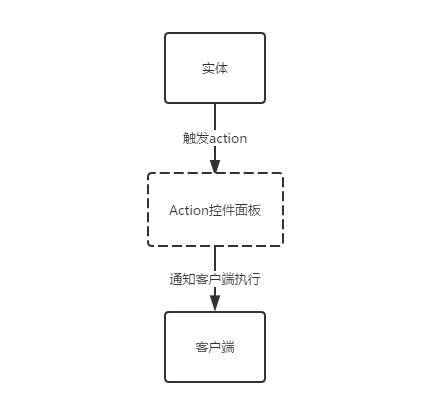
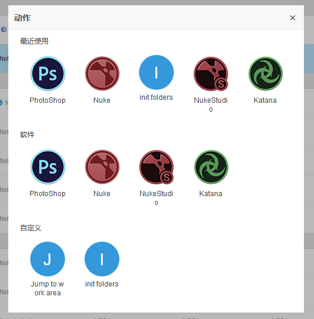

模块简介
Action动作是Strack实现了一套信号槽模型。动作分为两大类型一个是固定软件动作操作，一个是自定义动作操作。这样设计你可以把公司内部TD写得插件或者脚本直接注册到Strack系统体系中来。
这里只说明怎么使用Action，具体实现请看API使用帮助文档。

哪些模块存在可触发Action？系统设计是让action无处不在，随着系统逐步迭代升级action覆盖模块会越来越完善。
打开动作面板
使用web Action面板操作，首先需要打开桌面Strack客户端。

Action面板分为三个区域。 1. 最近使用的Action 2. 软件类型Action 3. 自定义类型Action
点击一个Action通知客户端触发对应操作。
